Three retained dirt-track landscapes, six new painted era variants. Roads now follow gaps between fixed building plots; modern highway approaches narrow into local streets before the city clusters. These are bare city-view backgrounds with open plots for the game's building sprites.
Native paintings retain the generated pixels. Linked 4K exports in the catalog are resampled display copies. Files and runtime binding keys · Generation prompts and provenance
Six fixtures use the extracted CityViewWindow::classify_site / layout_buildings / draw_buildings routines. Original, replacement-native and HD retain their slot coordinates and draw order. Enhanced retains the separate relative-size and ground-depth proposal. The revised road paintings use gaps between fixed building ground bands, with smaller junctions and highway-to-local-road tapers. Placement rules are unchanged.
Medieval scenes use timber-and-plaster houses, civic/religious buildings, a chapel and observatory. Modern scenes use contemporary houses, commercial/industrial services, the United Nations and SETI. Coastal scenes add a harbor; modern coastal also adds port facilities. Original houses use the game's two sheet rows; replacement houses use the matching medieval/modern sets. Superhighways is represented by the road background, as in the source, without an extra building sprite. The standard fixture title/date is retained in every stage.
Medieval roads before / after � Modern roads before / after � Slot guides and preservation checks
Six-scene HD contact sheet · Fixtures, inventories and output hashes · Renderer checks
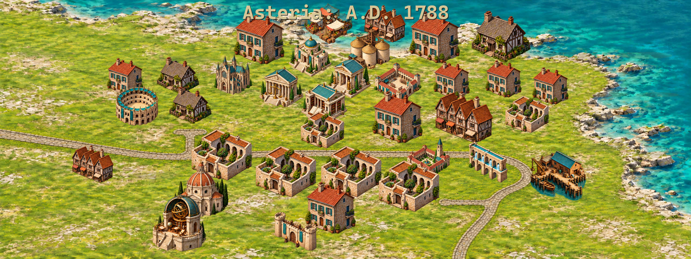
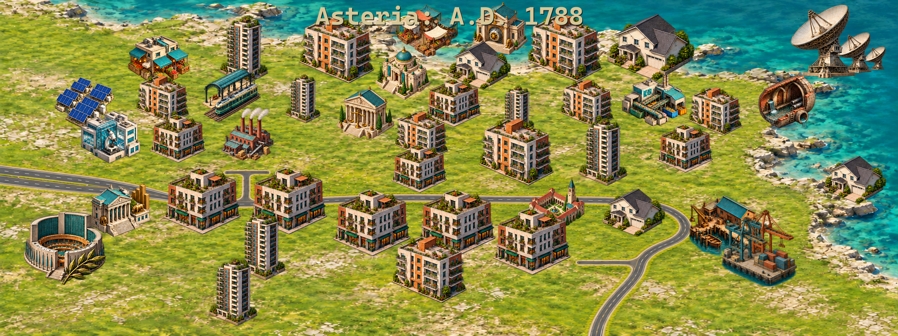
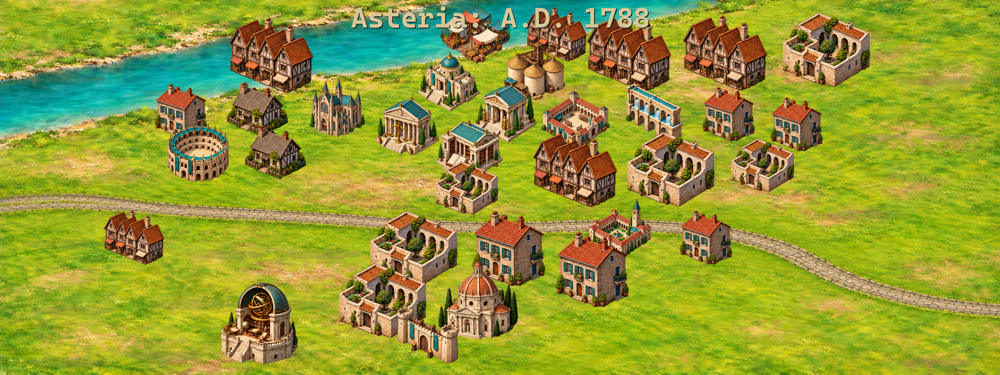
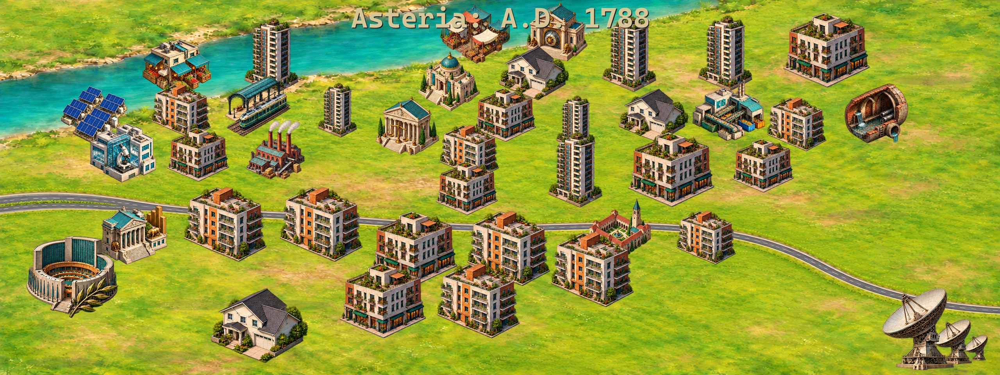
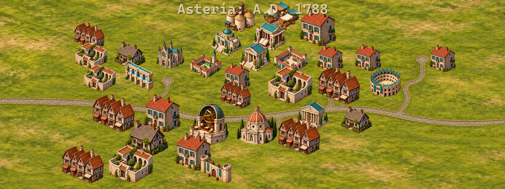
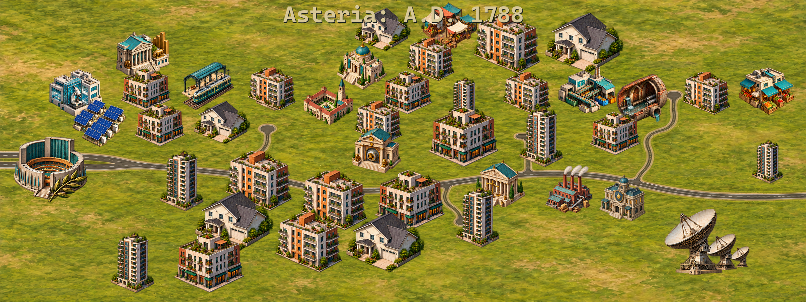
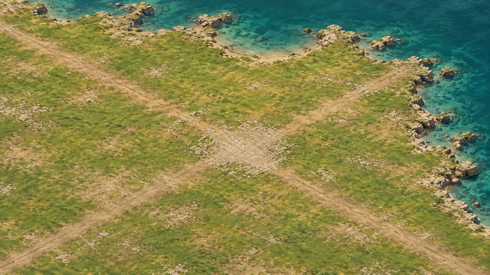
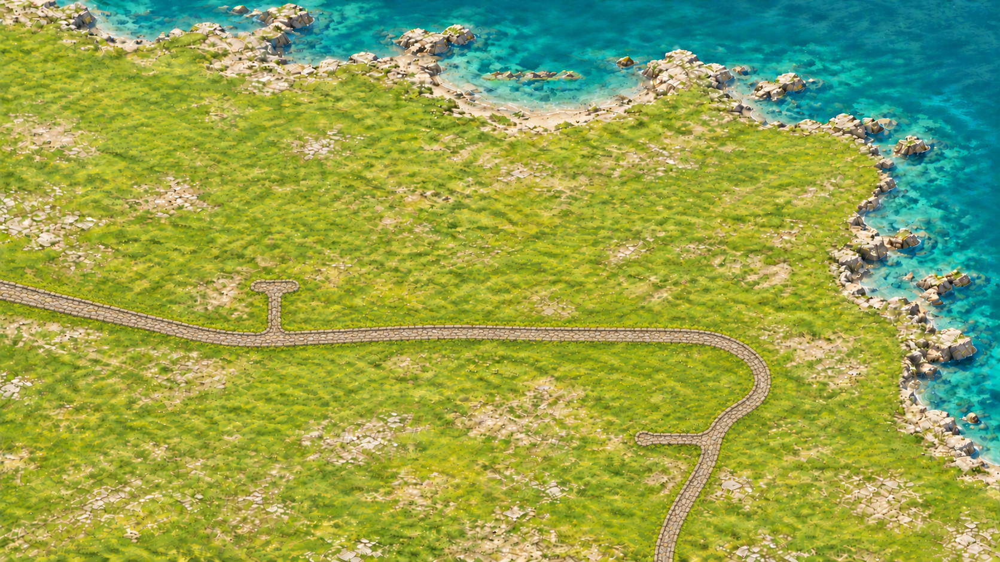
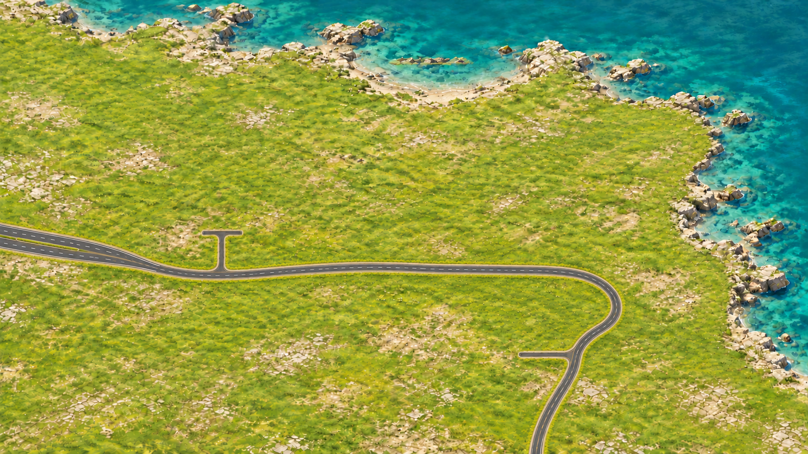
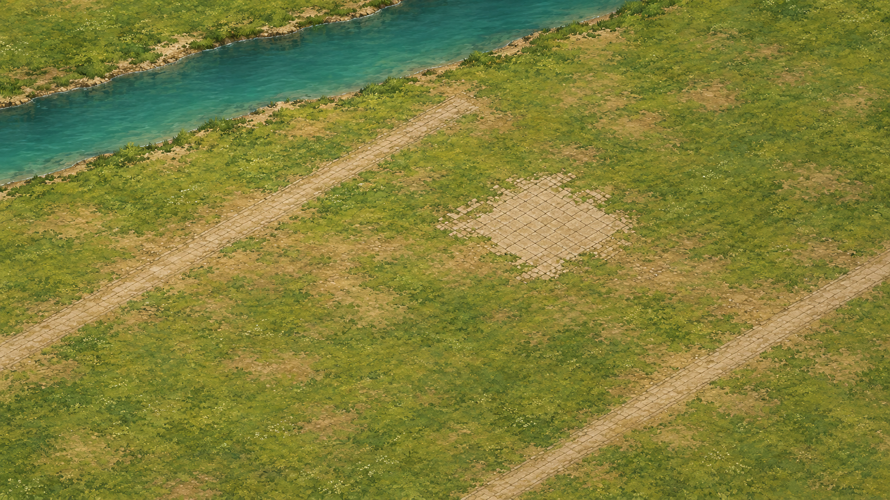
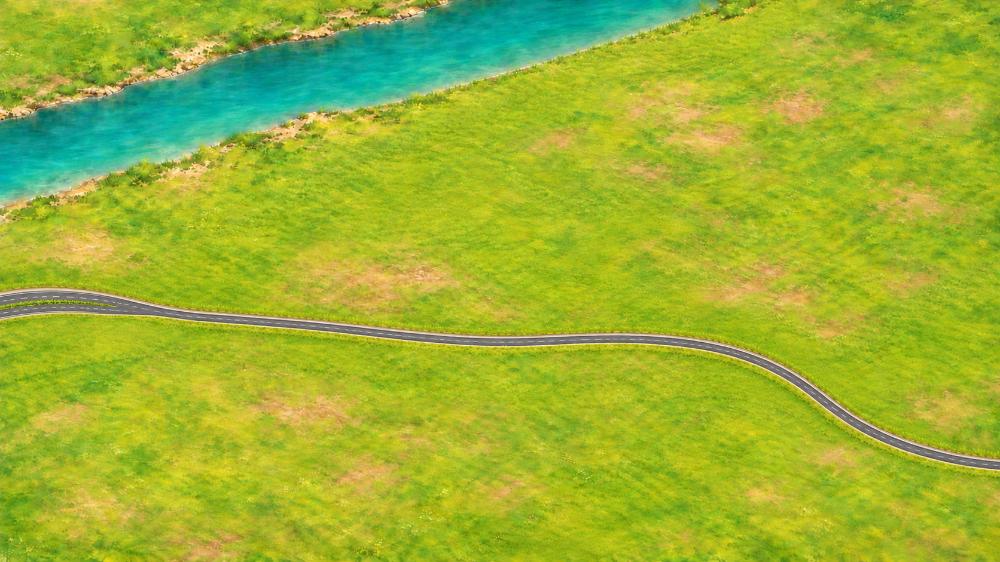
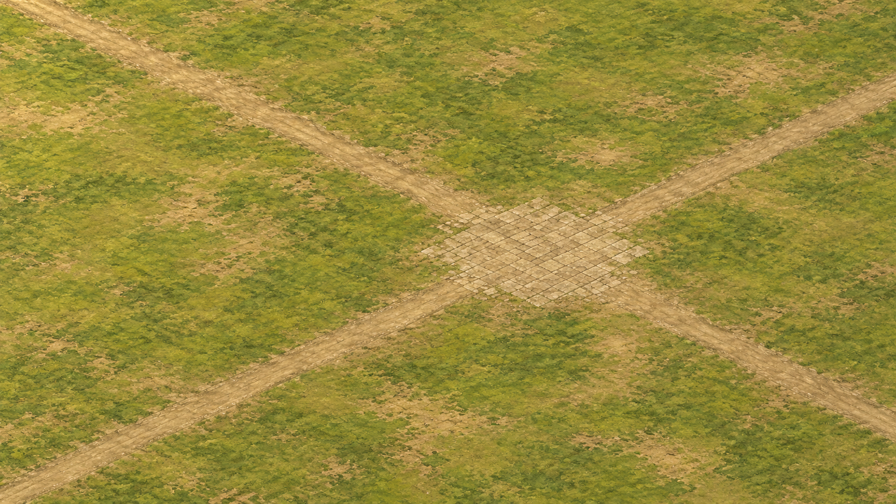
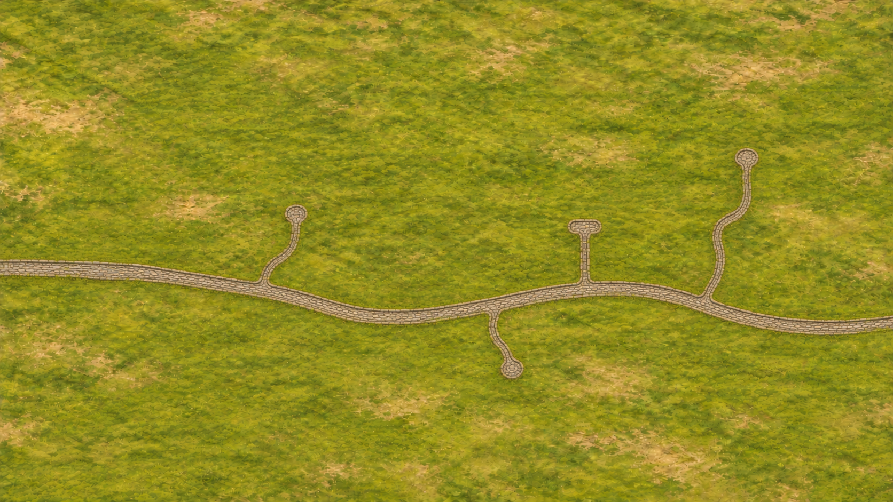
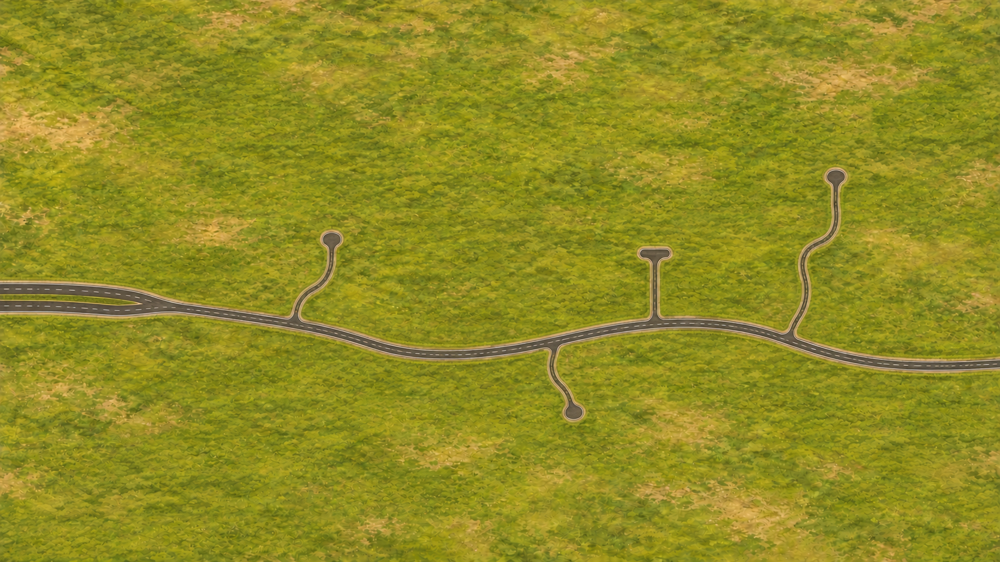